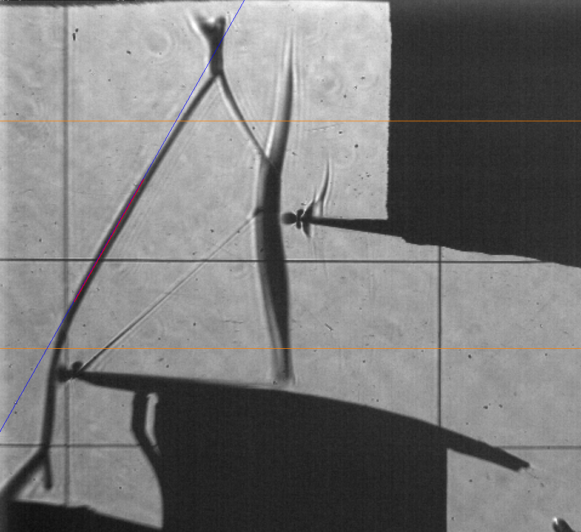
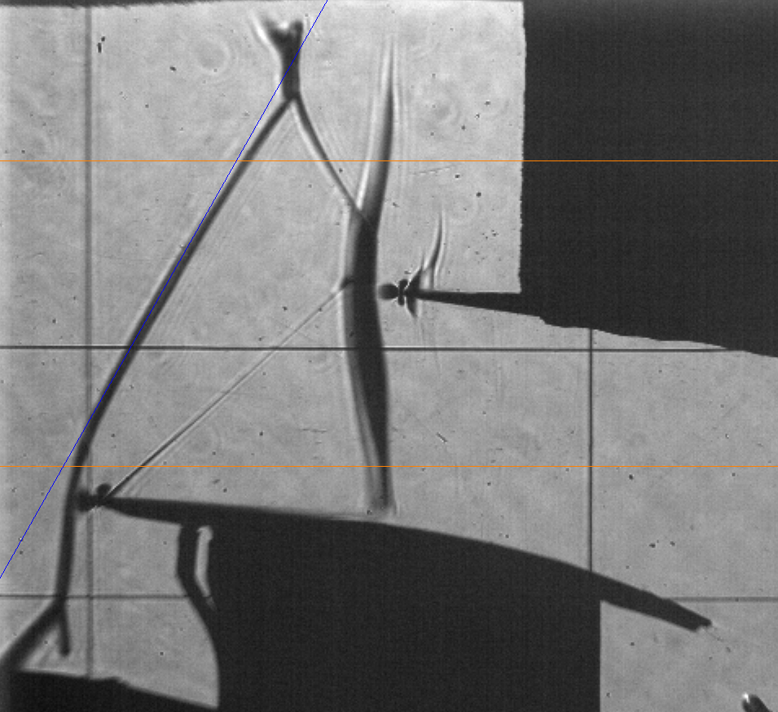
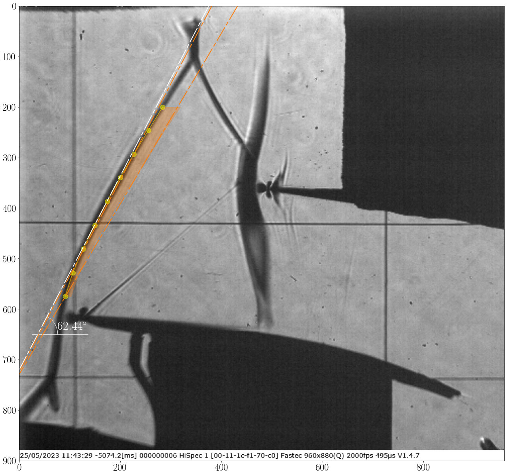
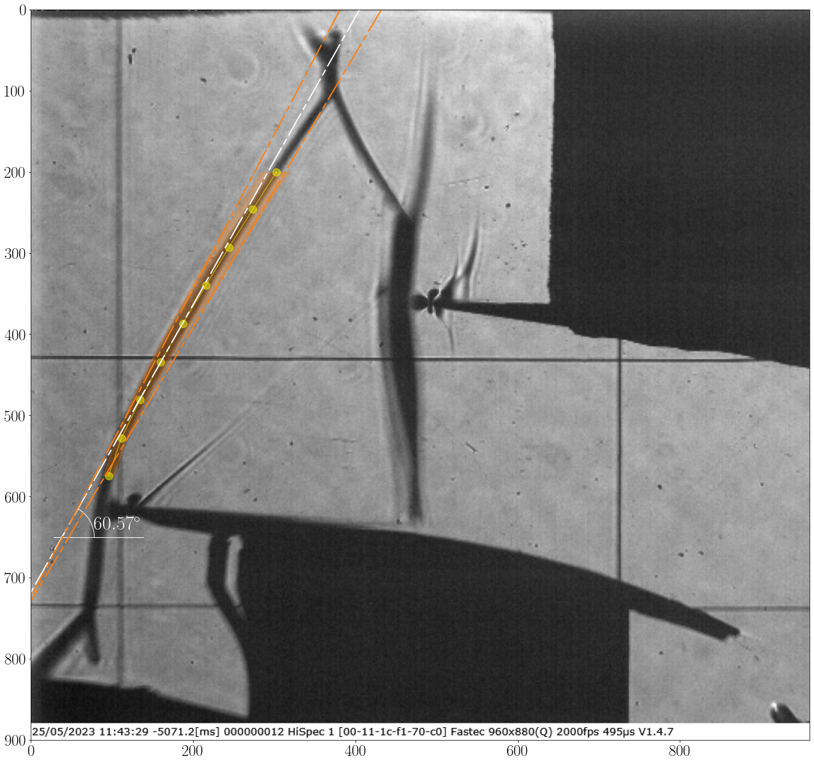

Mach number estimation
As an application of the Shock Tracking Library the estimation of the local Mach number from Mach waves as well as other vital flow properties such as pressure and temperature, within intricate shock structures. In such scenarios, the presence of pressure taps may obstruct the visibility of the shock system, requiring the utilization of pressure tubes, wires, or another system that may partially block the test section window. Nonetheless, with a thorough understanding of the flow direction, the Mach number can still be accurately determined using the following formula:
Where \(M1\) represents the upstream Mach number, and \(\mu\) denotes the angle of the Mach wave with respect to the upstream flow direction. The tracking algorithm operates on a userdefined number of slices within a specified vertical boundary. Additionally, the flow direction can be evaluated using LDA measurements upstream as in this example of the Mach line or through CFD simulation data, which is then interpolated at the tracking locations.
Run the following code:
import numpy as np from ShockOscillationAnalysis import InclinedShockTracking as IncTrac if __name__ == '__main__': # Define the snapshots path with glob[note the extention of imported files] imgPath = r'test_files\raw_images\*.png' # Define the velocity vectors as Vx and Vy with the vertical coordinates y inflow_path = r'test_files\upstream_Mwave_vel.csv' Vxy = np.genfromtxt(inflow_path, delimiter=',', skip_header = 1) # iniate the inclined shock tracking module IncTrac = IncTrac(D = 80) # use ShockTracking function IncTrac.ShockPointsTracking(imgPath, scale_pixels = True, tracking_V_range = [5, 13], # as scaled tracking reference values in mm nPnts = 3, # number of slices inclination_info = 50, # width of each slice points_opacity = 0.5, # displayed tracked points transparency avg_preview_mode = 'avg_all', # to display the estimated shock angle for each snapshot avg_txt_Yloc = 650, # y-location of the estimated angle value in pixels avg_txt_size = 30, # font size of estimated angle value in pt flow_Vxy = Vxy, # inflow velocity vectors [y, Vx, Vy] angle_interp_kind = 'linear', # inflow data interpolation to match slice points preview_angle_interpolation = True, # to plot interpolation values for review Mach_ang_mode ='Mach_num', # to show the Mach number values M1_color = 'yellow', # the displayed Mach number values color M1_txt_size = 18, # the Mach number values font size in pt arc_dia = 50, # the flow angle arc diameter )
The spacified
tracking_V_rangeis reviewed, and the estimated shock line is asked:
 
Press the left mouse button and drag to draw a line. Two lines will appear: the bold red line represents the start and end mouse locations, and the blue line represents the full line. Left-click again to confirm or right-click to remove the line and try again.
The software will track the shock and show results as follow:
Img Shape is: (900, 960, 3) registered line: 109 registered line: 726 Image scale: 0.12965964343598055 registered line: 615 Screen resolution: 1920, 1080 Vertical range of tracking points starts from 5.00mm to 13.00mm in pixels from 515px to 576px registered line: [(819, 0), (0, 727), -0.888135593220339, 727.5694915254237] Shock inclination test and setup ... ✓ Warning: Only boundary angles will considered ... Importing 100 images ... [====================] 100% Shock tracking started ... ✓ Plotting tracked data ... info.: For memory reasons, only 20 images will be displayed. note: this will not be applied on images storing [====================] 100% Angle range variation: [39.88,51.16], σ = 3.38 Average inclination angle 42.42 degAnd the 20 images are displayed, among of them
 
{kind=link}
{kind=link}
{kind=link}
{kind=link}
{kind=link}